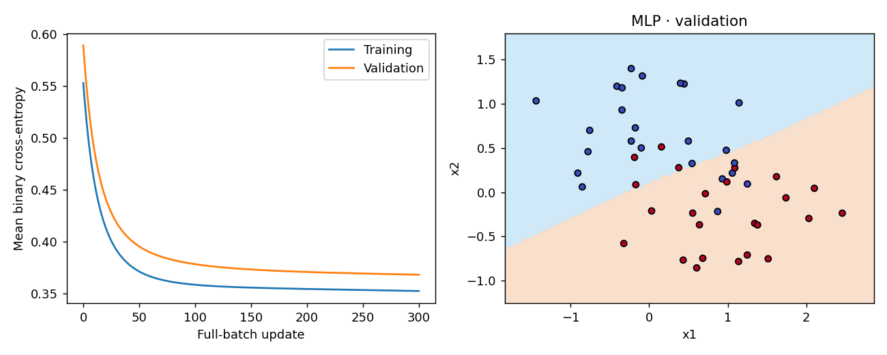

Ting Tan · EEEA · Oct 2026
Measured reference run · fictional classroom data
{
"width": 8,
"learning_rate": 0.1,
"epochs": 300,
"parameters": 33,
"initial_training_BCE": 0.5526805437090498,
"final_training_BCE": 0.3522622582118307,
"validation_accuracy": 0.8125,
"scaler_fitted_rows": 96
}| epoch | training_BCE | validation_BCE |
|---|---|---|
| 0 | 0.5526805437090498 | 0.588993051523195 |
| 75 | 0.3619016128794951 | 0.3836226778016587 |
| 150 | 0.35550597863281014 | 0.37300305871606226 |
| 300 | 0.3522622582118307 | 0.36795232525610966 |

{'python': '3.8.20', 'numpy': '1.24.4', 'sklearn': '1.3.2', 'matplotlib': '3.7.4'}